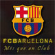

Barca


巴塞罗那足球俱乐部（Futbol Club Barcelona），简称巴萨（Barca），是一家位于西班牙巴塞罗那市的足球俱乐部，西班牙足球甲级联赛传统豪门之一。1899年11月29日由瑞士人胡安·甘伯创立。球队主场诺坎普体育场可容纳接近十万名观众，是全欧洲最大及世界第二大的足球场。
截至2015年12月，巴萨在西班牙国内，共赢得了23次西甲联赛冠军、27次国王杯（在国王杯历史上高居榜首）、11座西班牙超级杯、2座伊娃杯和2座西班牙联赛杯；在国际上，共赢得了5个欧洲冠军联赛奖杯、4个欧洲优胜者杯、3个国际城市博览会杯、4个欧洲超级杯和3个世俱杯。在IFFHS国际俱乐部排行榜中，巴萨在1997年、2009年、2011年和2012、2015年都排在第一位。2015年6月7日，巴塞罗那队3:1战胜尤文图斯，继2008/09赛季后再夺三冠王，成为首支两夺三冠王的球队。